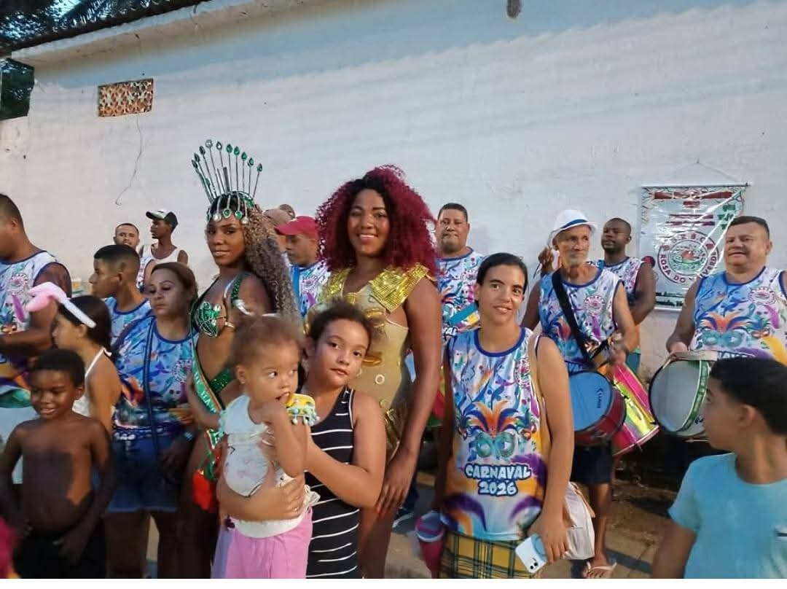
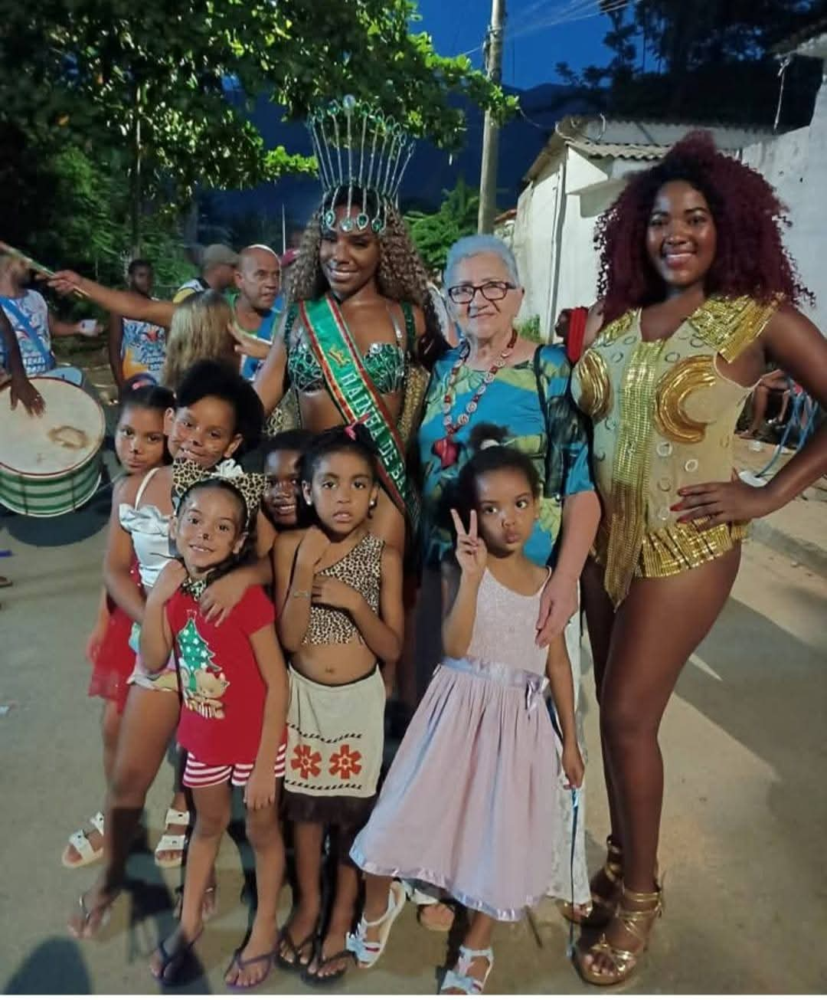
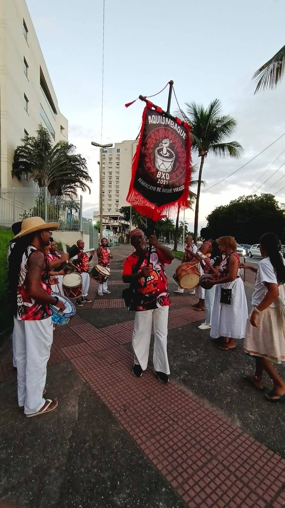
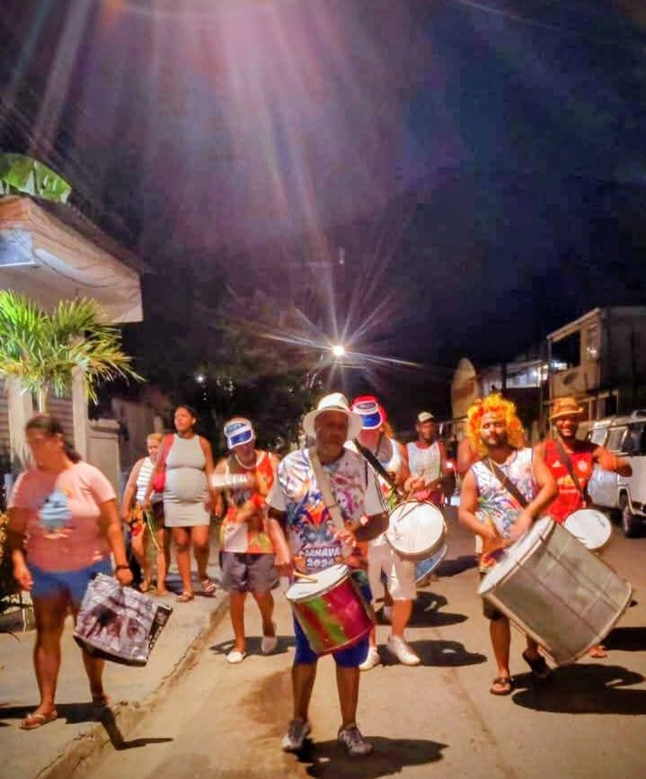
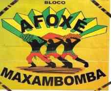

As vozes que formam a Liga.
A LUBESNI reúne atualmente 14 agremiações ativas entre escolas de samba, afoxés, blocos e maracatus — cada uma com página própria de história e trajetória.
Escolas filiadas ativas
História, identidade e trajetória carnavalesca.
Palmeirinha
Corumbá • verde e branco.
Conhecer a agremiação → Escola de SambaGarras do Tigre
Miguel Couto • amarelo e preto • fundada em 2012.
Conhecer a agremiação → Escola de SambaUnião de Miguel Couto
Miguel Couto • verde, vermelho e branco.
Conhecer a agremiação → Escola de SambaLeão de Nova Iguaçu
Santa Eugênia • vermelho, ouro e branco • fundada em 1968.
Conhecer a agremiação → Escola de SambaRenascer de Nova Iguaçu
Corumbá • vermelho, branco e ouro • fundada em 2022.
Conhecer a agremiação → Escola de SambaTupi de Austin
Austin • azul e branco • trajetória histórica no Carnaval Iguaçuano.
Conhecer a agremiação → Escola de SambaNova Brasília
Nova Brasília • verde, vermelho e branco • fundada em 2005.
Conhecer a agremiação → Escola de SambaUnidos do Raciocínio
Fundada em 1986 • ligada à Cultura Racional.
Conhecer a agremiação →Ancestralidade e cultura afro-brasileira
Afoxé Maxambomba
Nova Iguaçu • trajetória desde 2002/2003.
Conhecer a agremiação → Afoxé / Casa de CulturaAfoxé Filhos da Paz
Atuação cultural e comunitária em Nova Iguaçu.
Conhecer a agremiação →Carnaval de bairro e participação comunitária
Bloco Arrastão
Cabuçu • atuação documentada no Carnaval 2026.
Conhecer a agremiação → BlocoRosa do Valverde
Valverde • verde e vermelho • Carnaval 2026.
Conhecer a agremiação →Baque, formação e cortejo
Agenda e cortejos das filiadas.
Cartazes oficiais e registro fotográfico dos desfiles, ensaios e cortejos de 2026. Ver dossiê completo →
Leão de Nova Iguaçu — Ensaio Geral
Rua Mário José da Fraga nº 41, Santa Eugênia. Enredo 2026: Maria Felipa.
Rosa do Valverde
Rua Azarias Vilela, 530, Valverde, Nova Iguaçu.
Arrastão do Ipiranga
Rua Nordeste, Condomínio Toscana, Cabuçu.
União de Miguel Couto
Praça do D.P.O. de Miguel Couto.





Afoxé Maxambomba
O portfólio registra o nascimento do projeto em outubro de 2002, a primeira apresentação oficial em 19 de novembro de 2003 e a presença recorrente na abertura do Carnaval de Nova Iguaçu desde 2004.
O Afoxé articula cultura afro-brasileira, identidade, enfrentamento à discriminação e valorização das tradições de matriz africana.